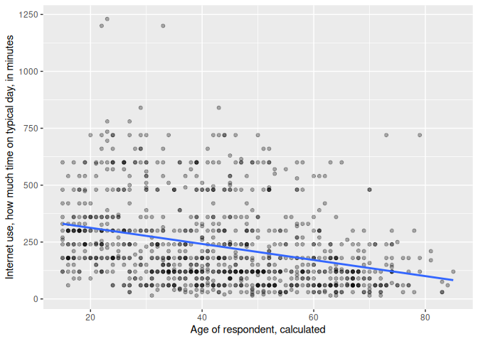

Co robi Knit z plikiem .Rmd
Knit robi trzy kroki. Najpierw knitr uruchamia kod R i pisze zwykły plik
Markdown (.md). Potem pandoc zamienia Markdown w kod HTML. Na koniec przeglądarka
rysuje z kodu HTML stronę. Kliknij kawałek pliku .Rmd po lewej i zobacz, co
zostało z niego na każdym etapie. Wszystko poniżej pochodzi z jednego prawdziwego Knit.
Cały wykład też jest takim raportem: kliknij tam dwa razy
dowolny fragment, a zobaczysz wiersze pliku, z których powstał.
Plik lab3-przyklad.Rmd, który piszesz
--- title: "Ile czasu w sieci?" author: "Anna Kowalska" date: "`r Sys.Date()`" output: html_document --- ```{r setup, include = FALSE} library(haven) library(ggplot2) ess <- read_sav("ess_polska.sav") net <- ess[ess$essround == 11 & !is.na(ess$netustm) & !is.na(ess$agea), ] ``` ## Dane Pytamy, ile minut dziennie **ludzie spędzają w internecie**. ```{r} nrow(net) ``` Odpowiedziało `r nrow(net)` osób, średnio `r round(mean(net$netustm))` minut. ## Wyniki ```{r tabela, echo = FALSE} grupy <- data.frame(Wiek = c("do 40 lat", "40 lat i więcej"), Minuty = c(mean(net$netustm[net$agea < 40]), mean(net$netustm[net$agea >= 40]))) knitr::kable(grupy, digits = 0) ``` ```{r wykres, echo = FALSE, message = FALSE, fig.cap = "Starsi spędzają w sieci mniej czasu."} ggplot(net, aes(x = agea, y = netustm)) + geom_point(alpha = 0.3) + geom_smooth(method = "lm", se = FALSE) ``` - Młodsi są w sieci dłużej. - W grupie do 40 lat jest `r sum(net$agea < 40)` osób.
Strona, którą widzi czytelnik
--- title: "Ile czasu w sieci?" author: "Anna Kowalska" date: "2026-11-16" output: html_document --- ## Dane Pytamy, ile minut dziennie **ludzie spędzają w internecie**. ``` r nrow(net) ``` ``` ## [1] 1039 ``` Odpowiedziało 1039 osób, średnio 231 minut. ## Wyniki |Wiek | Minuty| |:---------------|------:| |do 40 lat | 282| |40 lat i więcej | 191|  - Młodsi są w sieci dłużej. - W grupie do 40 lat jest 456 osób.
<div id="header"> <h1 class="title toc-ignore">Ile czasu w sieci?</h1> <h4 class="author">Anna Kowalska</h4> <h4 class="date">2026-11-16</h4> </div> <div id="dane" class="section level2"> <h2>Dane</h2> <p>Pytamy, ile minut dziennie <strong>ludzie spędzają w internecie</strong>.</p> <pre class="r"><code>nrow(net)</code></pre> <pre><code>## [1] 1039</code></pre> <p>Odpowiedziało 1039 osób, średnio 231 minut.</p> </div> <div id="wyniki" class="section level2"> <h2>Wyniki</h2> <table> <thead> <tr class="header"> <th align="left">Wiek</th> <th align="right">Minuty</th> </tr> </thead> <tbody> <tr class="odd"> <td align="left">do 40 lat</td> <td align="right">282</td> </tr> <tr class="even"> <td align="left">40 lat i więcej</td> <td align="right">191</td> </tr> </tbody> </table> <div class="float"> <img src="lab3-przyklad_files/figure-html/wykres-1.png" alt="Starsi spędzają w sieci mniej czasu." /> <div class="figcaption">Starsi spędzają w sieci mniej czasu.</div> </div> <ul> <li>Młodsi są w sieci dłużej.</li> <li>W grupie do 40 lat jest 456 osób.</li> </ul> </div> </div>
Pytamy, ile minut dziennie ludzie spędzają w internecie.
nrow(net)
## [1] 1039
Odpowiedziało 1039 osób, średnio 231 minut.
| Wiek | Minuty |
|---|---|
| do 40 lat | 282 |
| 40 lat i więcej | 191 |

- Młodsi są w sieci dłużej.
- W grupie do 40 lat jest 456 osób.
Kod HTML pokazany jest bez nagłówka strony i skryptów, które R Markdown dokłada
z szablonu. Obrazek ma tu zwykły odnośnik do pliku; w raporcie do oddania jest zapisany
w środku pliku HTML. Ten sam plik możesz zbudować sam:
lab3-przyklad.Rmd (obok musi leżeć
ess_polska.sav).